Highlights
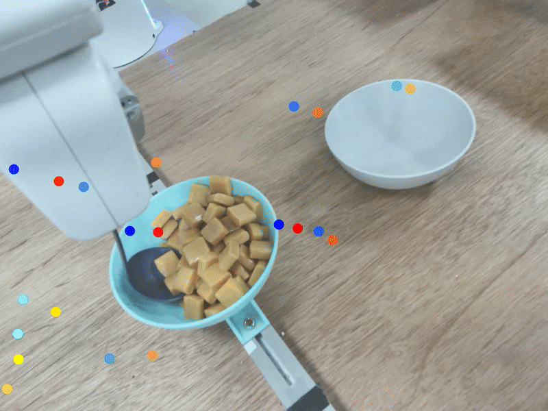
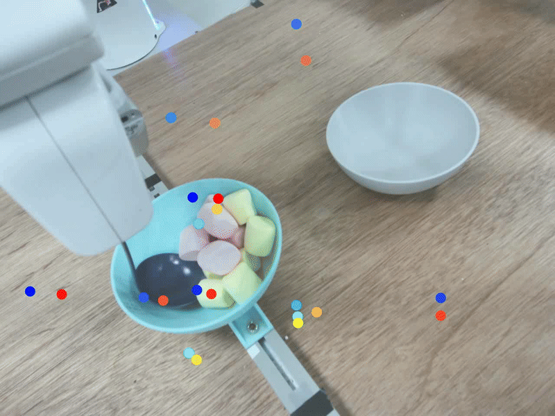
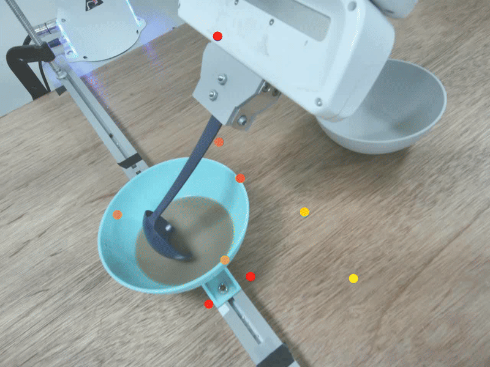
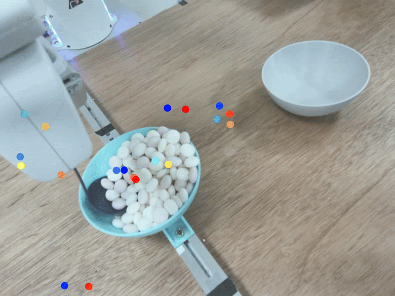
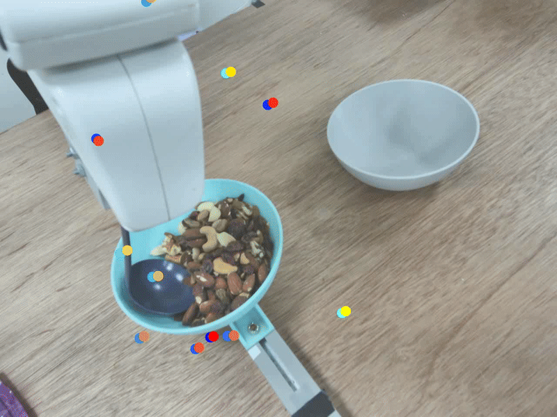
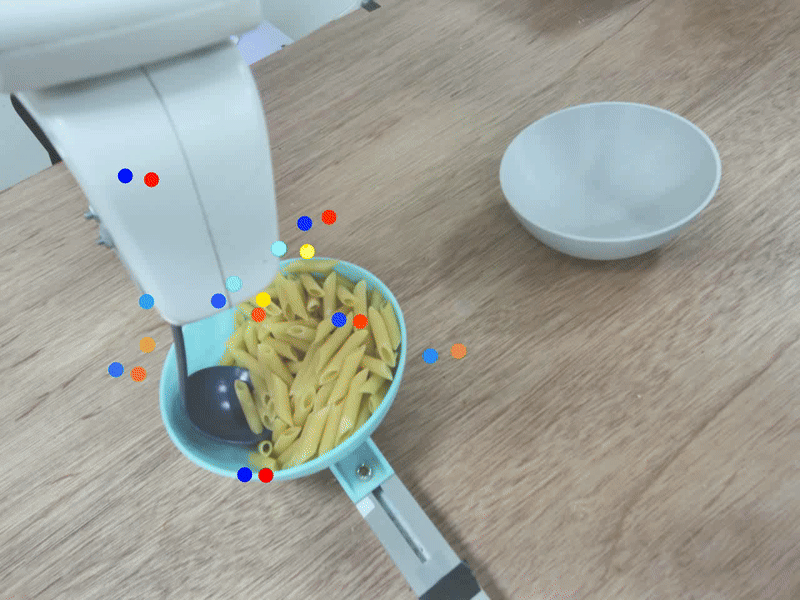
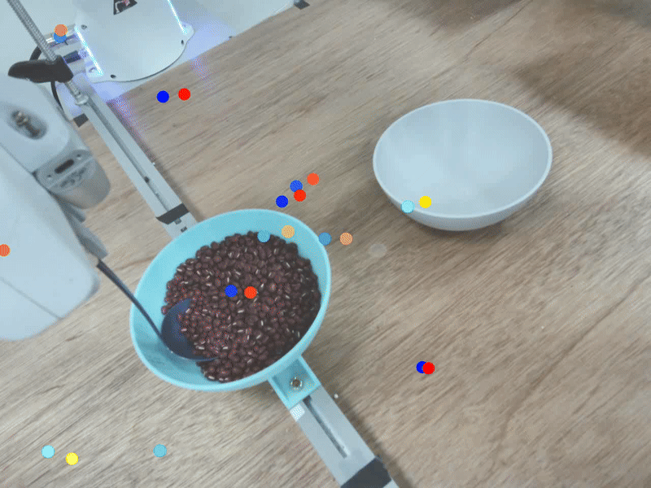
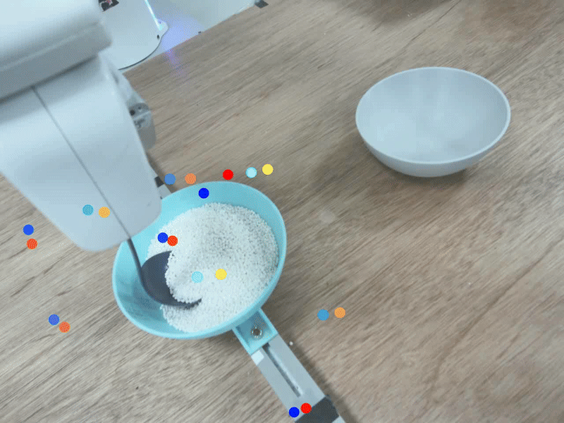
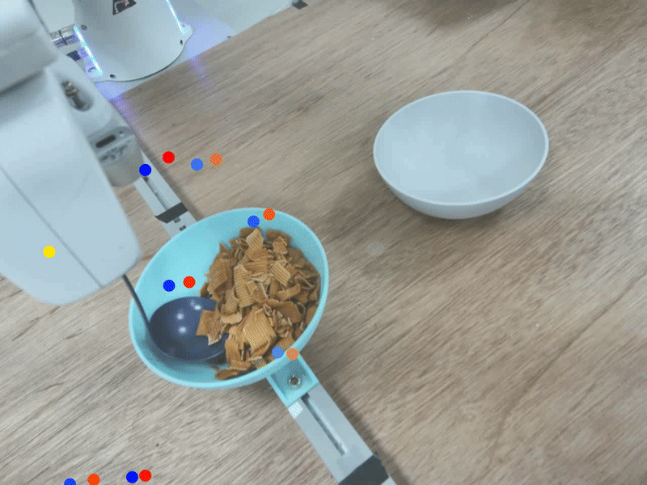
Robotic food scooping demands exact and delicate control, as small deviations can result in spillage. GRITS addresses this challenge by leveraging predicted spillage probabilities to adaptively refine trajectories, avoiding risky scenarios and enabling safer and more reliable manipulation.
Abstract
Robotic food scooping is a critical manipulation skill for food preparation and service robots. However, existing robot learning algorithms, especially learn-from-demonstration methods, still struggle to handle diverse and dynamic food states, which often results in spillage and reduced reliability. In this work, we introduce GRITS: A Spillage-Aware Guided Diffusion Policy for Robot Food Scooping Tasks. This framework leverages guided diffusion policy to minimize food spillage during scooping and to ensure reliable transfer of food items from the initial to the target location. Specifically, we design a spillage predictor that estimates the probability of spillage given current observation and action rollout. The predictor is trained on a simulated dataset with food spillage scenarios, constructed from four primitive shapes (spheres, cubes, cones, and cylinders) with varied physical properties such as mass, friction, and particle size. At inference time, the predictor serves as a differentiable guidance signal, steering the diffusion sampling process toward safer trajectories while preserving task success. We validate GRITS on a real-world robotic food scooping platform. GRITS is trained on six food categories and evaluated on ten unseen categories with different shapes and quantities. GRITS achieves an 82% task success rate and a 4% spillage rate, reducing spillage by over 40% compared to baselines without guidance, thereby demonstrating its effectiveness.
Framework Overview
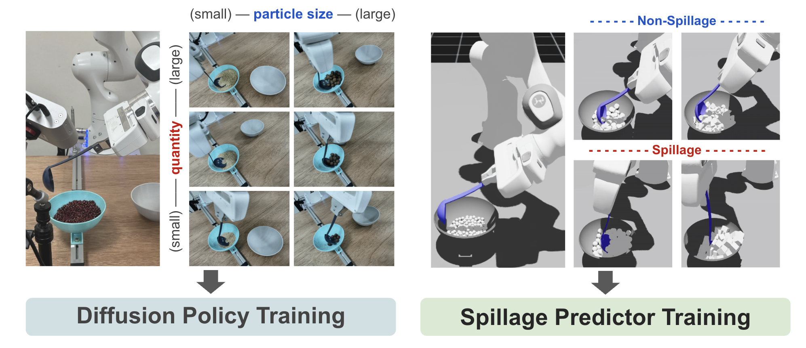
We collect 80 real-world expert demonstrations across different food types and quantities to train the diffusion scooping policy. On the other hand, to reduce labor-intensive cleanup required under real-world settings, we collect 4,000 food spillage and non-spillage cases in the simulation, to train the spillage predictor.
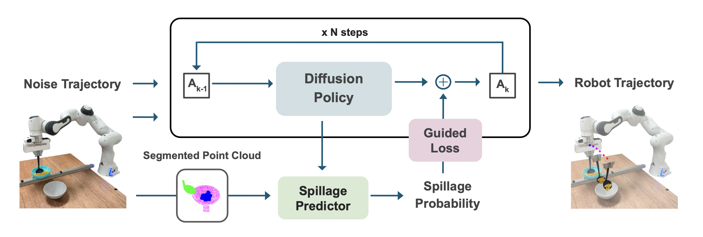
During inference, given current observation and an initial noisy trajectory, the diffusion policy denoises it into a refined trajectory. A spillage predictor, which takes segmented point clouds as input to reduce the sim-to-real gap, estimates the probability of spillage for given candidate trajectory. This probability provides a guidance signal that steers the denoising process toward safer trajectories. The robot then follows the refined trajectory using position control to scoop food items.
Real-World Experiments and Results
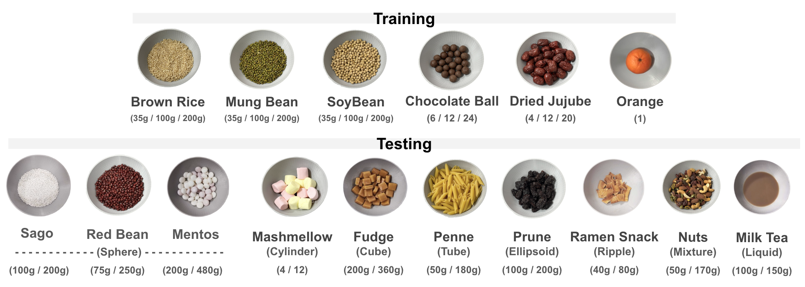
In the real-world experiments, we prepare 6 food categories for training (top row) and 10 unseen food categories for testing (bottom row), covering diverse shapes, quantities, and material properties.
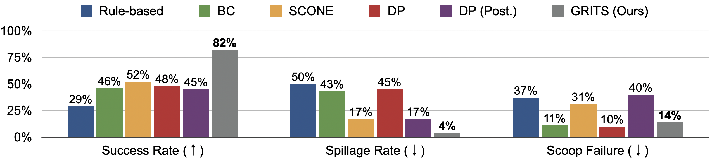
With spillage predictor, GRITS captures the food states and dynamics at each step and guide the robot motion generation accordingly to prevent risky spillage scenarios, achieving highest 82% success rate and lowest 4% spillage rate. Compared to unguided baselines, GRITS reducres spillage cases by over 40%.
Limitations and Future Works
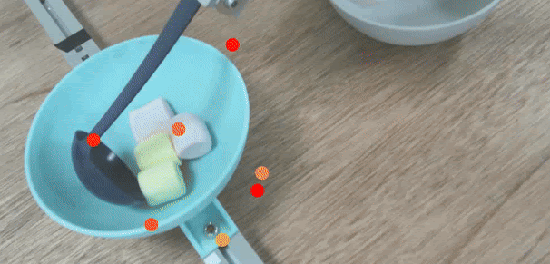
Spillage
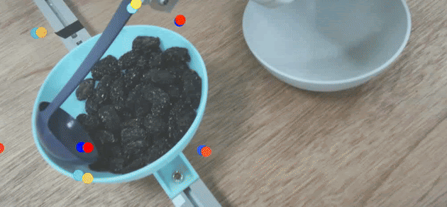
Scoop Failure
Our experiments reveal that failure cases often arise from the lack of detailed information about the physical properties of food, beyond what can be captured by visual features alone. To address this limitation, future work could incorporate pre-interaction strategies and multimodal sensing, including force-torque and tactile feedback, to build a more comprehensive representation of food characteristics and improve robustness.
Team
1 National Yang Ming Chiao Tung University
2 XYZ Robotics
3 NVIDIA
BibTeX
@article{tai2025grits,
title={GRITS: A Spillage-Aware Guided Diffusion Policy for Robot Food Scooping Tasks},
author={Tai, Yen-Ling and Yang, Yi-Ru and Yu, Kuan-Ting and Chao, Yu-Wei and Chen, Yi-Ting},
journal={arXiv preprint arXiv:2510.00573},
year={2025}
}